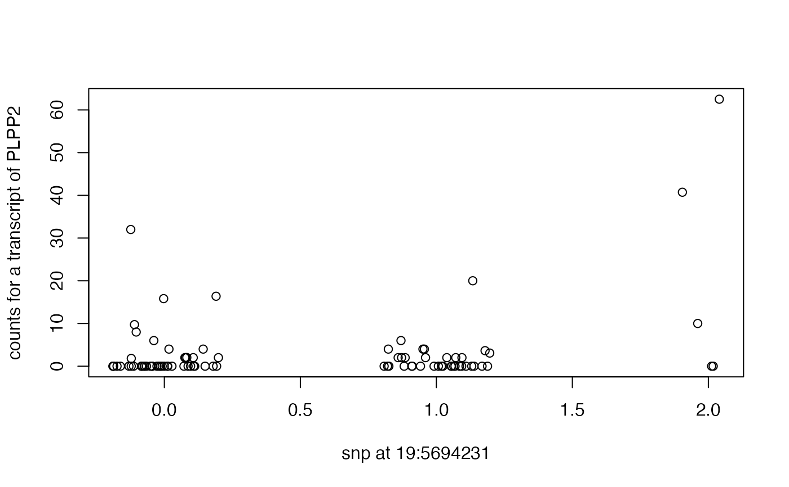

bind a matrix of Z statistics created with getzs to the rowRanges of a SummarizedExperiment
Source:R/getzs.R
bind_Zs.Rdbind a matrix of Z statistics created with getzs to the rowRanges of a SummarizedExperiment
Examples
data(geuv19)
lk = geuv19[1:20,]
mafs = maf(colData(lk)) # only snps here
mins = apply(data.matrix(as.data.frame(colData(lk))), 2, min, na.rm=TRUE) # some -1 values
colData(lk) = colData(lk)[,which(mafs>.25 & mins > -1)]
lk = bind_Zs(lk)
head(rowRanges(lk)[,7])
#> GRanges object with 6 ranges and 1 metadata column:
#> seqnames ranges strand | snp_19_1400679
#> <Rle> <IRanges> <Rle> | <numeric>
#> ENST00000545779 18 15254418-15271744 + | 0.0361026
#> ENST00000408051 19 71973-72110 + | NaN
#> ENST00000318050 19 110643-111696 + | 1.1910512
#> ENST00000410397 19 223158-223261 - | NaN
#> ENST00000327790 19 281040-291185 - | 1.0622605
#> ENST00000434325 19 281040-291504 - | 0.2106134
#> -------
#> seqinfo: 319 sequences (1 circular) from GRCh38 genome
plpp2tx = as.numeric(assay(lk["ENST00000434325",]))
hiz = colData(lk)[,"snp_19_5694231"]
plot(plpp2tx~jitter(hiz), xlab="snp at 19:5694231", ylab="counts for a transcript of PLPP2")

summary(lm(plpp2tx~hiz))
#>
#> Call:
#> lm(formula = plpp2tx ~ hiz)
#>
#> Residuals:
#> Min 1Q Median 3Q Max
#> -9.636 -5.245 -0.854 -0.854 52.868
#>
#> Coefficients:
#> Estimate Std. Error t value Pr(>|t|)
#> (Intercept) 0.8542 1.1717 0.729 0.46790
#> hiz 4.3908 1.4936 2.940 0.00418 **
#> ---
#> Signif. codes: 0 '***' 0.001 '**' 0.01 '*' 0.05 '.' 0.1 ' ' 1
#>
#> Residual standard error: 8.547 on 89 degrees of freedom
#> Multiple R-squared: 0.08851, Adjusted R-squared: 0.07827
#> F-statistic: 8.642 on 1 and 89 DF, p-value: 0.004184
#>